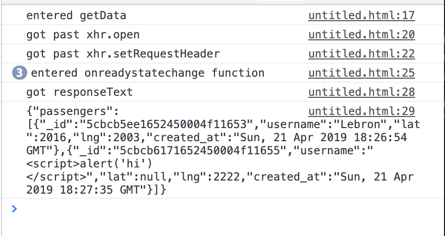
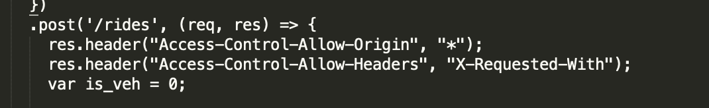
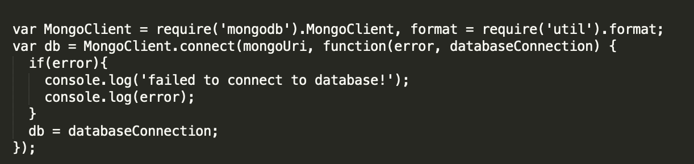

Introduction
For this analysis I examined the front-end client side and the back-end server-side portion of a lift-knockoff. The client-side portion uses a Google maps API to display a map. A username, latitude, and longitude are sent to the server from the client via an HTTP POST request. The server takes in these parameters, stores them in a NoSQL data base (MongoDB), and returns a JSON array with information the client will need to display on the map. This information is only data that has been collected over the last 3 minutes. If the client is a driver, it will receive passenger information, and if the client is a passenger, the client will receive vehicle information. I've been hired as a security consultant to document and resolve the security and privacy issues in the application.
Methodology
I used a variety of tools to test these applications. There are many possible vulnerable spots at play here, given that it deals with requests, responses, and the use of a NoSQL database. The request was tested using curl and the server. https://limitless-scrubland-48566.herokuapp.com/ displays all the vehicles in the database, and passengers can be seen using query strings such as https://limitless-scrubland-48566.herokuapp.com/passenger.json?username=Shakira, which displays all the passengers with the username Shakira. The response aspect was analyzed using the client-side. More specifically, the developer tools and a Python SimpleHTTP server allowed me to inspect what exactly is returned by the server. The contents of the database can be analyzed indirectly, by looking at what information is returned in the JSON array. Additional tests were done using Burp Suite to intercept the HTTP requests and see if some of the more evident vulnerabilities were present. I first performed black box testing, testing with all of these methodologies without first reading the source code. Once I understood the general behavior of the application, I downloaded and took a look at the source code, which further enabled me to understand possible vulnerabilities.
Abstract of Findings
After the analysis, it is clear that there are some security and privacy recommendations that can be made to further improve the quelity and performace of the application. I will focus here on three general findings. First, the specifications of assignment 2 state that if something is wrong with the data, it should not be stored in the database and an error message should be returned. In my tests, I found that even when the username was something that was clearly not a username, such as a script tag, it was still stored in the database and the corresponding information is sent back in a resonse, rather than rejecting the input and sending the error message. Special characters such as '<' are stored in the database, which is dangerous and could potentially lead to some execution of injected code. A similar thing occurred with the latitude and longitude input. Latitude and longitude should only take numeric values, but non-numeric values are being accepted as valid input when again, they should be rejected and an error message should be sent. Second of all, "Access-Control-Allow-Origin: *" should not be used, as it allows sharing with any origin, which allows any site to send sequests and get access to the server's response. The third point is a suggestion about the choice of database, as the ease of use of a NoSQL database like MongoDB comes at the cost of critical data exposure and vulnerabilities that will be expanded on below. Perhaps a relational database like SQL could provide a more secure framework.
Issues Found
- Issue: Broken Authentication of Data Input and Potential for Injected Code
- Location: Server-side index.js file, in the POST request portion
- Severity of Issue: Medium to High. The issue is that a client with inputs such as "username= (Some script tag) lat = text lng = text", will still just return the array of vehicles, accepting the input and storing it in the database. The reason that it could be an issue of medium severity is that the erroneous information is only displayed as NULL, so the risk of executing injected Javascript code in the browser is relatively low when it comes to lat and lng. However, it could be of high severity because this lack of authentication allows for invalid passengers and vehicles with special characters or latitude and longitude with non-numeric values to be accepted. This is dangerous because Javacript code could be stored in the database, waiting to be executed, and the client will receive null latitude and longitude and potentially dangerous injected code as usernames. This could potentially break the client-side.
- Description of Issue: I found this issue by using multiple tests. On the terminal I tried sending non-numeric values as latitude and longitude and I still got a response indicating an acceptance of the information. I also tried sending special characters as username and the same thing happened. The data returned indicated that the script tags, along with the NULL values for latitude and longitude ahd been stored in the database.
- Resolution: A simple solution would be to have an IF condition that checks for special characters and confirm if the input for latitude and longitude are actually numbers ( isNAN() function checks if value is not a number). Only then should the data be stored in the database, otherwise the error message shouyld be sent.

- Issue: Incorrect Use of Access-Control-Allow-Origin
- Location: Server-side index.js file, in the POST request portion
- Severity of Issue: Low to Medium. The issue is that using Access-Control-Allow-Origin: * in the cross origin resource sharing (CORS) allows sharing with every origin, which means that any site can send an XHR request to the server and process its response. This could lead to leakage of data beyond intranet and should generally speaking be avoided. This is, however, probably not a high level of severity because APIs that are designed to only be used by XHR should enable CORS. However, considering the previous issue already discussed on this analysis, one can see why this is potentially dangerous.
- Description of Issue: I found this issue by simply looking at how CORS was enabled for the POST portion of the server side. The code revealed that CORS was indeed set as Access-Control-Allow-Origin: *
- Resolution: A safer alternative would be to not allow other input with such generalization. Encryption with safe sites that use safer protocols such as HTTPS may also be a good idea to use. However, fixing this is harder than the previous issue because this is an application that relies heavily on XHR requests and responses, meaning that CORS has to be enabled somehow. Additionally, according to w3.org, it is not possible to grant access to multiple specific sites, use a partial wildcard match, nor specify more than one Access-Control-Allow-Origin header.

- Issue: Suggestion: Consider the Vulnerabilities of Use of NoSQL Database
- Location: Server-side index.js file, in the POST request portion
- Severity of Issue: Low to Medium. This issue is more of a list of vulnerabilities associated with NoSQL databases such as MongoDB, and suggestion of the potential benefits of switching to a relational database. NoSQL databases have Authorization weaknesses in that any created user has access to the whole database and everything stored in it. It also has Admin Authorization Weaknesses because a user with access to the Admin database has read/write access to the whole database. Additionally there is no Admin password. There is no encryption involved, meaning that all data is sent in the clear. Finally, there are glitches in the way query strings are employed when accessing data in MongoDB, which could potentially display values the client should not have access to (by using [$ne]) . The variety of potential problems is large, which is why it's hard to conclude which is the level severity of the issue.
- Description of Issue: I found this issue by doing some research on how the two types of databases compared with one another and taking into cosideration which are the benefits of using one as opposed to the other. It is clear that certain applications benefit more and are more vulnerable by using non-relational databases.
- Resolution: A safer alternative would be perhaps to move to a relational database such as SQL. SQl is one of the most versatile and widely used options available, making it a popular option for complex queries. It is more predictable because all of the data must have the same structure. There are pros and cons to both options, and therefore both should be considered.

Conclusion
In this analysis, I examined the structure and general performance of both the client-side and the server-side portion of a lift-knockoff. The main issues I found were broken authentication of data input, potential incorrect use of Access-Control-Allow-Origin, and suggested consideration of SQL database. So far most of these errors don't compromise the performance of the application, but they certainly have the potential to do so. It is impossible to be 100% sure that all security vulnerabilities have been covered. For this reason, I recommend to further inspect the list of top 10 security errors and vulnerabilities for past years. https://www.owasp.org/index.php/Top_10_2013-Top_10. These cover on a wider scope the variety of vulnerabilities to watch out for.
References
https://stackoverflow.com/questions/12001269/what-are-the-security-risks-of-setting-access-control-allow-origin
https://stackoverflow.com/questions/9713644/when-is-it-safe-to-enable-cors/9725695#9725695
https://www.w3.org/wiki/CORS_Enabled
https://www.trustwave.com/en-us/resources/blogs/spiderlabs-blog/mongodb-security-weaknesses-in-a-typical-nosql-database/
https://www.geeksforgeeks.org/difference-between-sql-and-nosql/